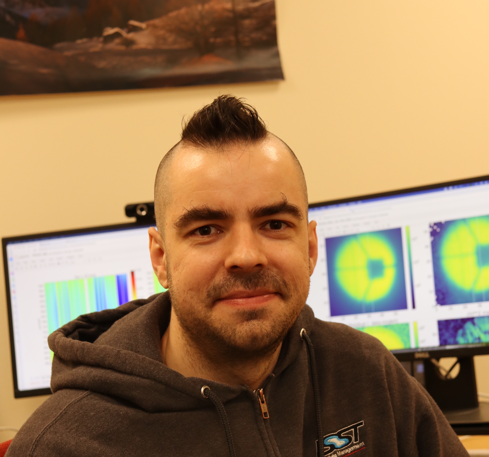
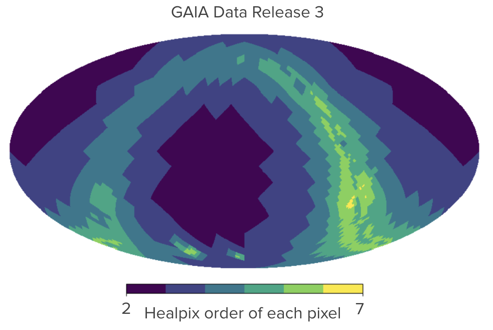
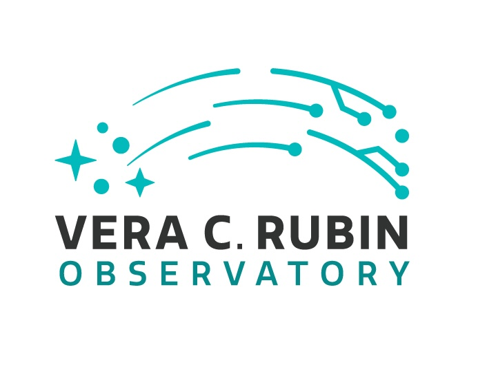
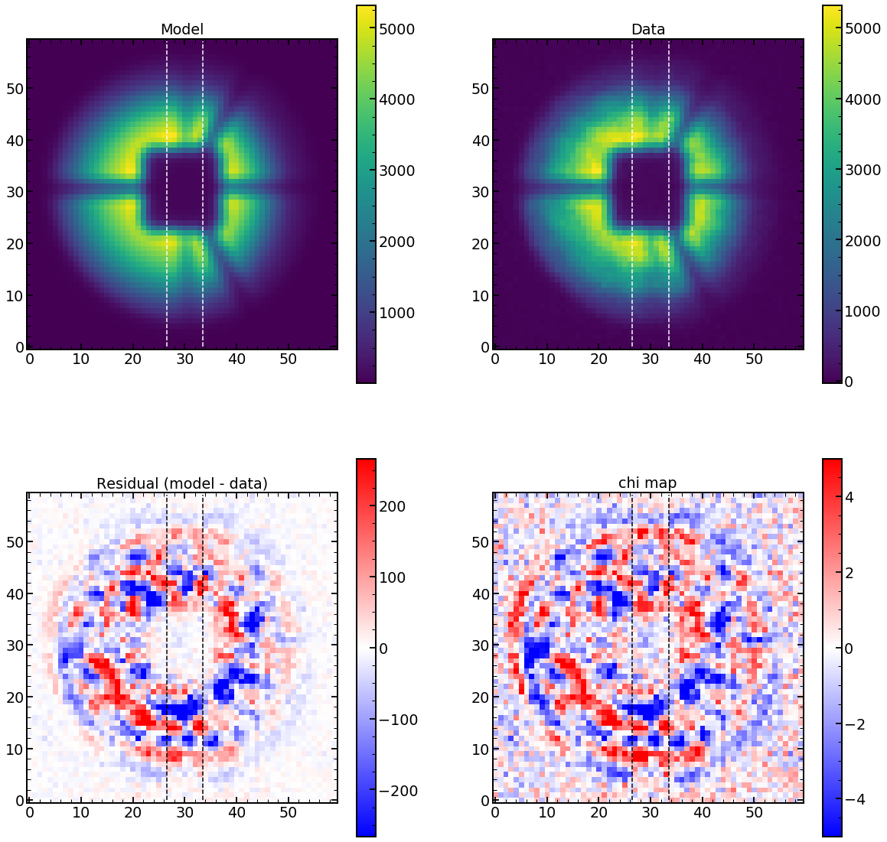
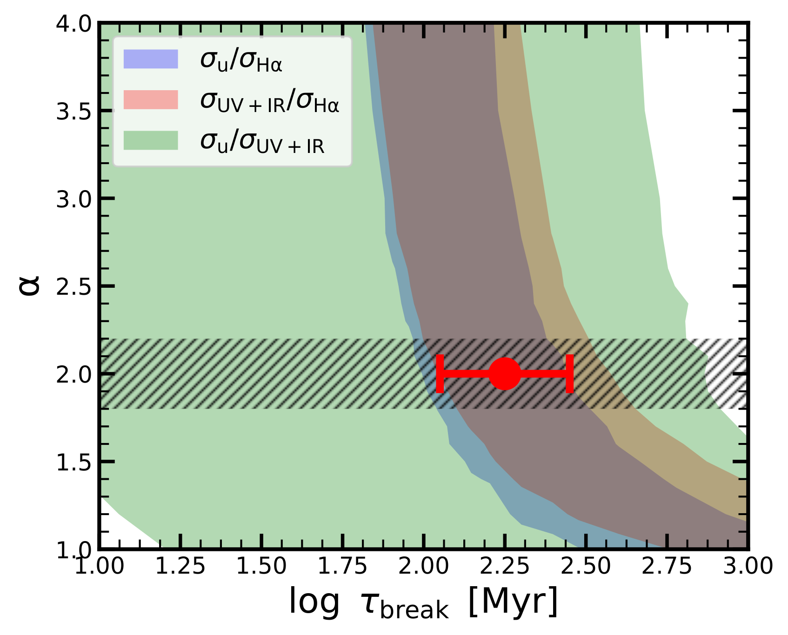
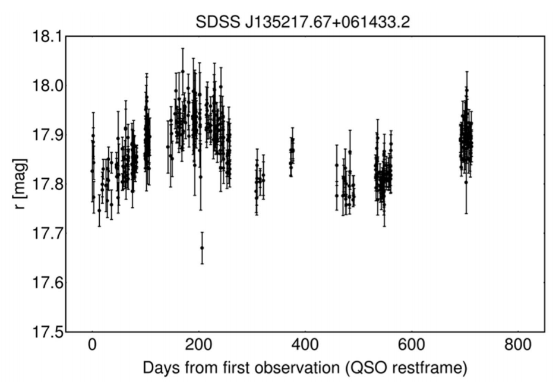
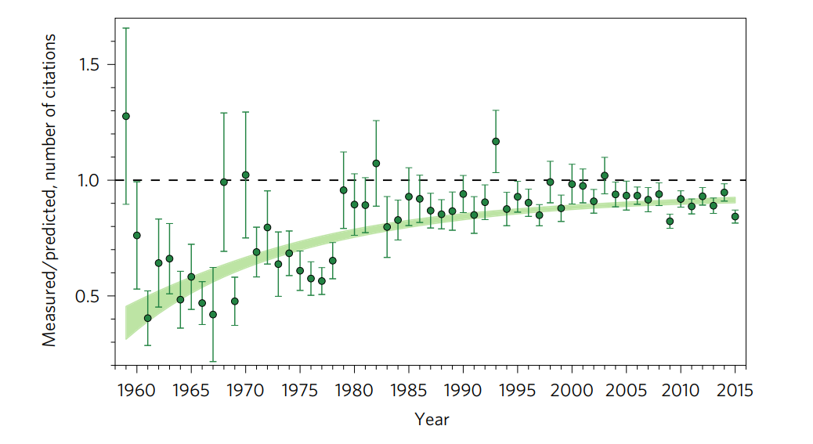

Hi! This is personal webpage of Neven Caplar.
Research Scientist/Engineer - LINCC Frameworks
About Me
{kind=link}

I am a member of LINCC Frameworks, based at the DIRAC Institute, University of Washington. I am guiding the development of the LSDB package.
Previously, I worked on difference imaging algorithms for Vera C. Rubin Observatory, and on the development of a 2d reduction pipeline for the Prime Focus Spectrograph, the instrument operating on Subaru Telescope. I completed my Ph.D. at the Swiss Federal Institute of Technology in Zurich.
My research interests are mostly connected with the analysis of large datasets and variable sky research. You can find my resume here and short description of some of my projects below.
Projects
{kind=link}

LSDB homepage
I am a project owner and chief scientist for LSDB - python tool for scalable analysis of large catalogs.
The project is a part of LINCC Frameworks -
an initative to develop state-of-the-art analysis techniques capable of meeting the scale and complexity of data from upcoming large survey telescopes.
{kind=link}

LSDB repo for working with Rubin data
Until October 2025 I was also working on commissioning the Rubin Observatory. The first photons with LSSTCam were just observed in April 2025!
I was working on improving the quality of difference imaging, lightcurve construction and photometric performance.
{kind=link}

Poster presented during the Society of Photo-Optical Instrumentation Engineers meeting in July 2022
Previously (2017 - 2022), my main effort was concentrated on the 2d data pipeline for processing spectra taken by upcoming Prime Focus Spectrograph.
The aim of the project was to model the point spread function from defocused images to achieve high-quality subtraction of the skylines in the upcoming data.
{kind=link}

N. Caplar & S. Tacchella, 2019 MNRAS
One of my favorite past projects has been investigating the time evolution of galaxies. Together with Sandro Tacchella
we have been successful in modeling the star formation histories of galaxies as a stochastic process.
When comparing with the data, we found that galaxies become decorrelated, i.e., lose the memory of their previous star-formation, on the scale of roughly 200 Myr.
{kind=link}

N. Caplar, S. J. Lilly, B. Trakhtenbrot, 2017 ApJ
I have been particularly interested in time-domain astronomy for a long time. My first project was the study analyzing optical time variability of AGN in Palomar Transient Factory Survey.
We have analyzed 28000 AGN with 2.4 million data points.
After full recalibration of the survey, we have characterized the global properties of AGN variability (e.g., we see that more luminous AGN are less variable) and also discovered an interesting steepening of the power spectral distribution for more massive objects.
{kind=link}

N. Caplar, S. Tacchella, S. Birrer, 2017 NatAst
I also have a paper that quantified the gender bias in astronomy.
We have analyzed over 200000 papers from the field of astronomy and used machine learning techniques to estimate the difference in the number of citations between papers written by men and women.
We find that women receive around 10% less citations than what would be expected if the same papers were written by men.
Contact information
University of Washington, Department of Astronomy |
ncaplar[at]uw[dot]edu |